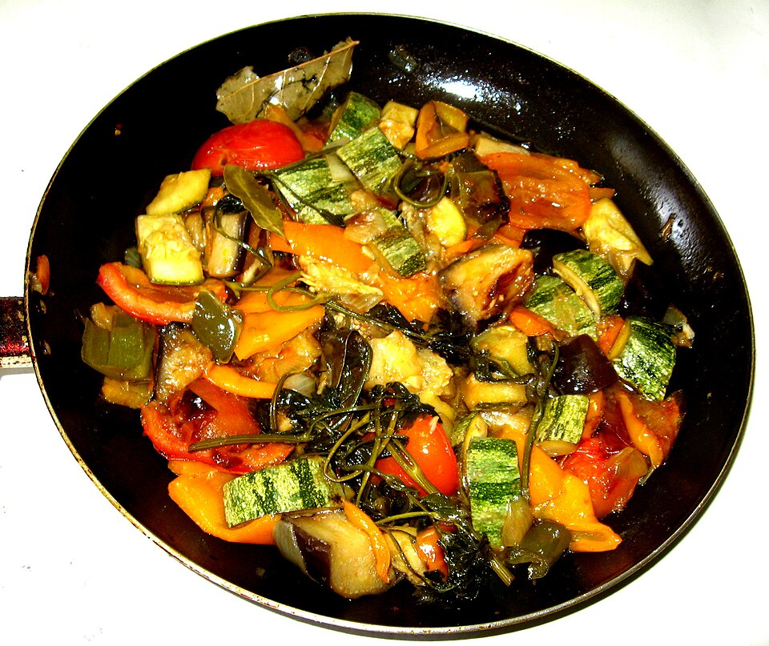

Ratatouille

Home
Description
Ratatouille is the art of spending 45 minutes meticulously layering squash just to prove a cartoon mouse isn't a better chef than you. It is a vibrant, elegant French spiral that tastes delicious, looks beautiful, and aggressively forces you to eat your vegetables
Ingredients
For the Tomato Sauce Base
- 2 tbsp olive oil
- 1 medium yellow onion, finely chopped
- 3 cloves garlic, minced
- 1 bell pepper (any color), finely chopped
- 1 can (14 oz) crushed tomatoes
- 2 tbsp fresh basil, chopped
- Salt and black pepper to taste
For the Vegetable Rounds
- 2 zucchini, sliced into thin rounds
- 2 yellow squashes, sliced into thin rounds
- 2 Chinese eggplants, sliced into thin rounds
- 4 plum tomatoes, sliced into thin rounds
For the Herb Drizzle
- 3 tbsp olive oil
- 1 tbsp fresh thyme leaves
- Salt and pepper to taste
Steps
- Set your oven to 375°F (190°C).
- Heat 2 tablespoons of olive oil in a skillet over medium heat. Sauté the chopped onion, garlic, and bell pepper until soft (about 5 minutes). Stir in the crushed tomatoes, season with salt and pepper, and let it simmer for 5 minutes. Stir in the fresh basil, then spread this sauce evenly across the bottom of a round baking dish.
- Alternately arrange slices of zucchini, yellow squash, eggplant, and plum tomatoes in a tightly packed, overlapping spiral pattern over the sauce, working from the outside of the dish toward the center.
- Whisk together the herb drizzle ingredients (olive oil, thyme, salt, and pepper) and brush it evenly over the top of the vegetable slices. Cover the dish loosely with foil.
- Bake covered for 40 minutes, then remove the foil and bake for an additional 20 minutes until the vegetables are tender and the edges are slightly golden.
- Let it cool slightly before serving as a side dish or main over crusty bread.